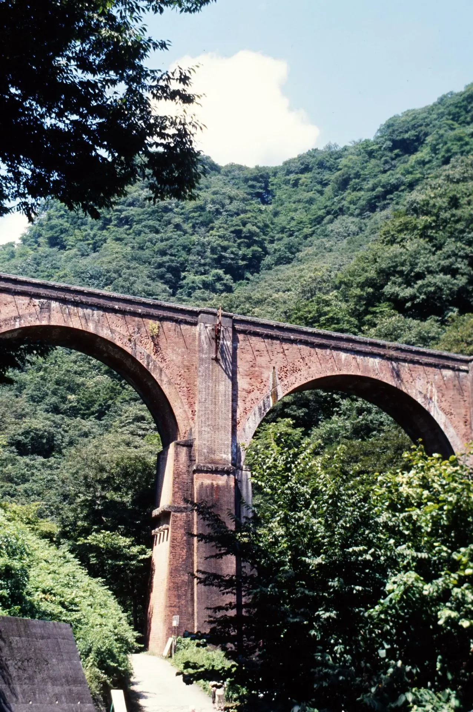
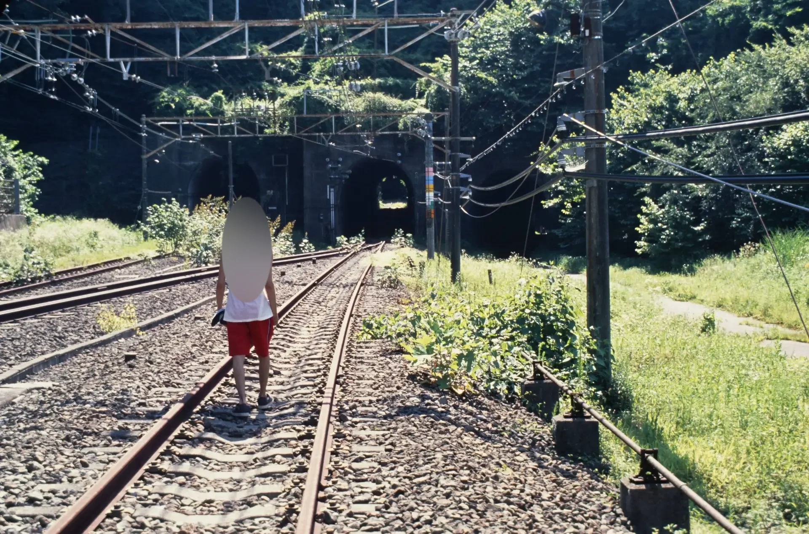
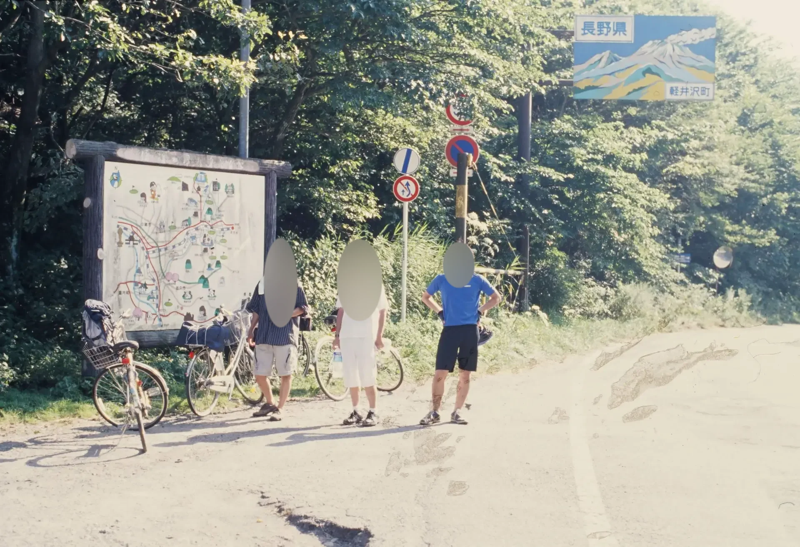
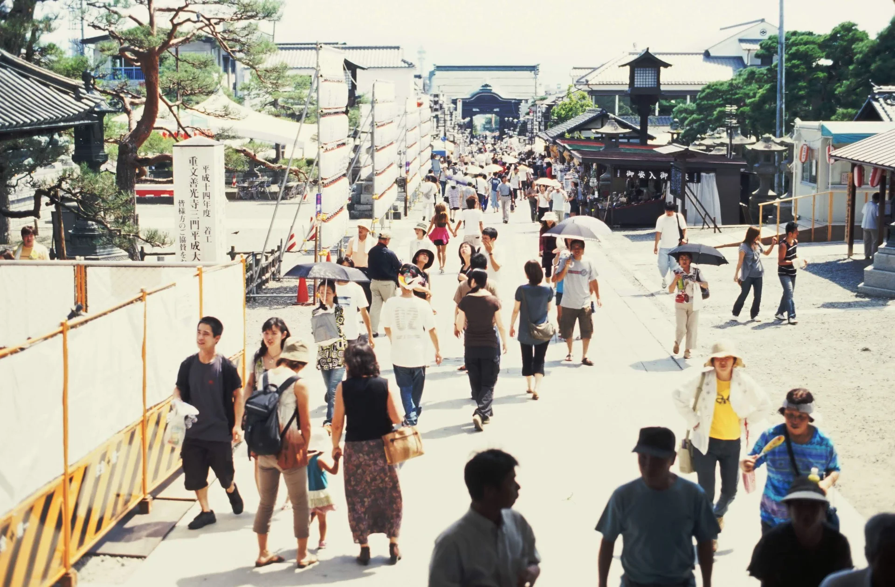
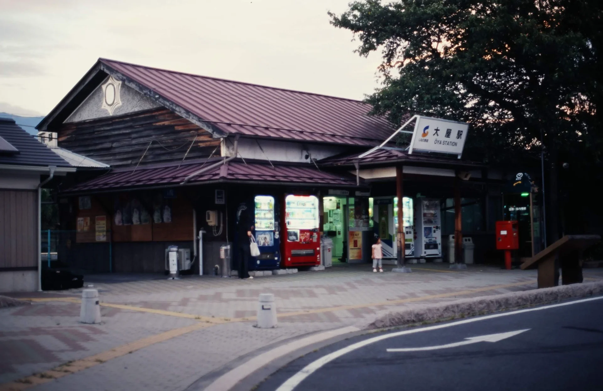

2007年8月13日～8月26日 中部地方自転車ツーリング Part1
2007年8月の大学サイクリングクラブの夏合宿は、諸事情で途中からの参加になった。
合流する前に、地元の中学の同級生が長野までママチャリで自転車旅行するのに随行した。
主にフィルムカメラで撮影。おそらくPENTAX LXと標準レンズを使用。画質が悪い写真はガラケーで撮影。
2007年8月13日 実家～埼玉県花園町（深谷市）
地元を出発し、道の駅花園まで走って野宿。
写真なし。
2007年8月14日 埼玉県花園町（深谷市）～長野県千曲市（屋代）
一気に、目的地の長野県屋代まで走った。
ママチャリで同級生が碓氷峠を越えるのに、キャンピング装備のMTBで同行する。
下仁田側から妙義山の麓を越えて横川、そこから碓氷峠旧道へ。
碓氷峠の眼鏡橋。このときのフィルムカメラの写真はポジで撮影している。
碓氷峠の廃線跡。
碓氷峠旧道は元々が馬車道なので勾配がゆるく、ママチャリでも問題なく上ることができた。
碓氷峠。
このあと一気に屋代まで走った。軽井沢から善光寺平は下り基調なのですぐについた。
屋代にある友人の実家に泊まった。
2007年8月15日 善光寺・松代観光
この日は列車で観光へ。
まず善光寺へ。
そのあと、観光地を探したところ、松代が面白そうなので長野電鉄で長野から松代に行った。

松代駅で降りて、町を散策し、池田満寿夫美術館に行った。この駅と長野電鉄屋代線（河東線）は2012年に廃線になった。

長野電鉄屋代線や松代駅の写真については、非常によい写真が多く、鉄道マニアの需要もあると思われるので、こちらのページで別途紹介する。
池田満寿夫美術館を見たあと、屋代線で屋代に帰った。長野電鉄のワンマン運転士がひりついていて、屋代駅で降りるときにワンマンの運転箱に入れるのか改札で切符を渡すのか尋ねたら怒られた記憶がある。
2007年8月16日 しなの鉄道田中駅から大学サイクリングクラブへ合流
屋代の友人実家を出て、前日に列車内から見てよい雰囲気だと感じた長野電鉄桐原駅を見にいった。


そのあと、しなの鉄道の田中駅まで輪行。
田中駅から立科の麓にあるキャンプ場まで走り、大学サイクリングクラブの夏合宿へ合流した。
2026年1月22日記事公開